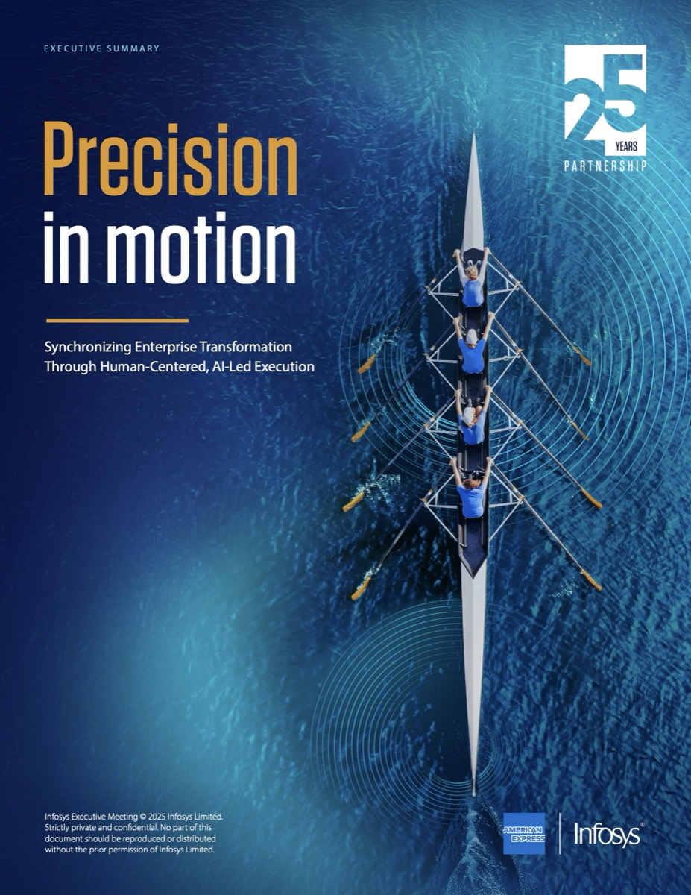

Better Stories.
Built Faster.
Similar capability. Different bid themes.
In large deals, shortlisted transformation partners can look remarkably similar.
- Similar Solutions
- Similar Ecosystems
- Similar Credentials
- Similar Reputations
- Similar Experience
- Similar Talent Pools
Your story is what competitors can't replicate.
When capability is comparable, the story becomes part of the competitive advantage.
It can all sound the same.
Story, narrative, theme…
Concept, design, visuals…
But are they the same?Well, not really.
A practical language for large-deal storytelling.
Deal Synopsis provides the context. Story sets the journey. Narrative gives it structure. Theme carries it.
Simple framework for finding and telling the story.
A repeatable approach to developing compelling stories for large deals.
Picking the right
analogy is key.
The right analogy makes a complex deal simple,
memorable and easy to retell.
Get it wrong and everything built on it works harder.
Past analogies.
 Telstra · Unleash the EnergyVendor to strategic partner, told as energy released across every document.
Telstra · Unleash the EnergyVendor to strategic partner, told as energy released across every document.
American Express · Precision in motionA rowing crew in perfect sync: 25 years of partnership, one boat moving forward. Google · Unfolding the FutureA paper-craft butterfly unfolding in Google’s colours, from cover to motion.
Google · Unfolding the FutureA paper-craft butterfly unfolding in Google’s colours, from cover to motion.
What we learned from
previous sessions.
- AIt needs time. Give it the time it deserves.
- BIf you don’t learn, you will get left behind.
- CIt is difficult, but you have Titan’s support.
Creating a narrative
that flows.
Weave sub-headlines and themes
into one continuous story.
Each opportunity should build on
what came before.
Opportunity + Momentum
Building the narrative across every deal opportunity.
One theme, amplified by AI, growing louder with every step of the deal.
Shaping the visual thread through creative theming.
Theming isn't decoration. It's a way to shape and carry the story across every touchpoint of the deal.
The four aspects of theming.
A strong theme will make it easier to develop your narrative.
Design and AI converge.
Scaling every deal with AI.
Better prompts. Stronger storytelling. Design and AI converge to inspire audiences, scaling deals with AI.


An AI-powered fan experience that makes every supporter their own Knicks player card.
- Support for
Large Deals - AI-Powered
Experiences - Account-Level
Agentic Design - AI Training to
Support Sales